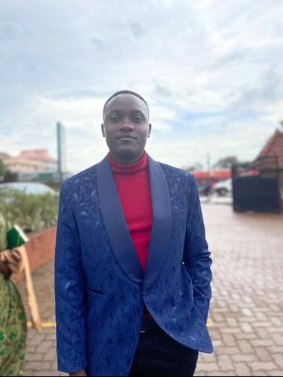

Nkuubi Lewis John
I am John Lewis Nkuubi, a recent graduate with a Bachelor of Commerce from Makerere University and a current participant in Diverse Tech Talent Program: web development program by scholarship program by SkillHat. My passion for continuous learning and emerging technologies led me to enroll in The web development program, where I am actively learning HTML5, CSS, and JavaScript. As a proactive and adaptable professional, I have excelled in roles such as a Junior Accountant and an Assistant Project Manager at Youth Leading Environmental Change. I posess experience in project management that involved presenting confidently in organizational meetings and successfully pitching innovative approaches, contributing to the success of the Clean Environment Initiative Project.